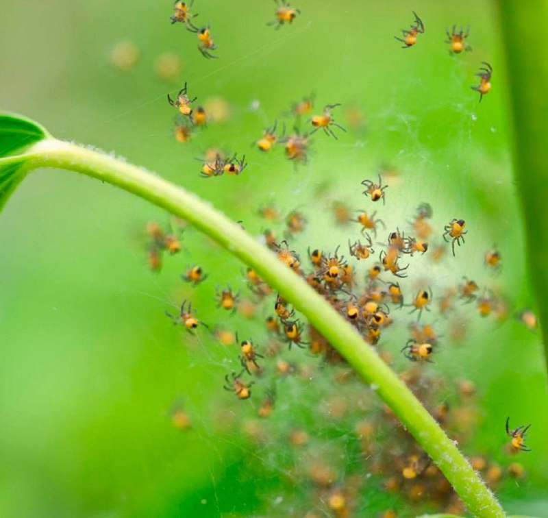
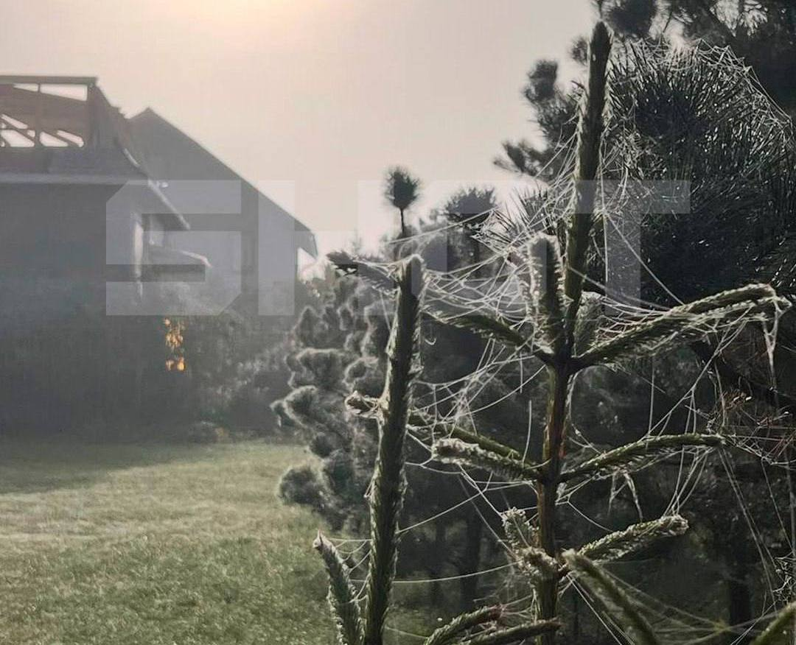

Топор Live
@toporlive
Топор Live
@toporlive
Пауки-летуны атакуют участки россиян оставляя после себя десятки метров паутины нашествие наблюдают сразу в нескольких регионах страны.


⚡️Пауки-летуны атакуют участки россиян, оставляя после себя десятки метров паутины — нашествие наблюдают сразу в нескольких регионах страны.
Жители Новгородской, Калининградской, Ленинградской и других областей сообщают о десятках метров паутины на домах, деревьях и земле. Местами её даже принимают за первый снег.
Пауки-летуны — это молодь мелких пауков, которая расселяется с помощью нитей паутины, подхватываемых ветром. Для людей они не опасны.
👉 Топор Live. Подписаться
Жители Новгородской, Калининградской, Ленинградской и других областей сообщают о десятках метров паутины на домах, деревьях и земле. Местами её даже принимают за первый снег.
Пауки-летуны — это молодь мелких пауков, которая расселяется с помощью нитей паутины, подхватываемых ветром. Для людей они не опасны.
👉 Топор Live. Подписаться